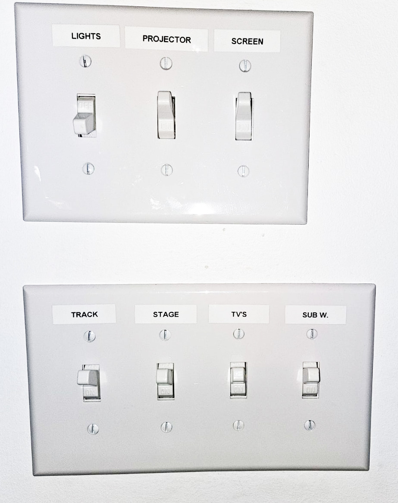
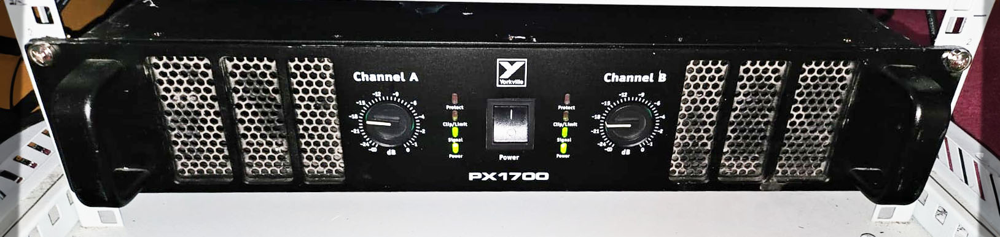

-
+
Liste de vérification pour la sonorisation
Allumer tous les
INTERRUPTEURS
(Projecteur, Écran, piste, scène, téléviseurs, Subwoofer)
?

Assurez-vous que tous les interrupteurs pour le projecteur, l'écran, la piste, la scène, les téléviseurs et le caisson de basses sont activés.
Allumer les
AMPLIFICATEURS
à l'intérieur du rack Grise sous le comptoir
?
 Les amplificateurs de puissance se trouvent à l'intérieur du rack blanc ; assurez-vous qu'ils sont alimentés pour une sortie audio appropriée.
Allumer la TABLE DE MIXAGE AUDIO
?
Assurez-vous que la table de mixage audio est alimentée pour gérer efficacement les différentes entrées audio.
Activer le
FADER FLIP
et augmenter le
VOLUME PRINCIPAL
à 5
?
Activez la fonction de basculement du fader et réglez le contrôle du volume principal sur le niveau 5.
Maintenant, descendez à l'INTÉRIEUR de l'ÉGLISE
?
Descendez dans la zone inférieure de l'église pour poursuivre les préparatifs de l'installation.
Vérifiez que les 4 HAUT-PARLEURS à l'intérieur de l'église sont allumés
?
Vérifiez que les quatre haut-parleurs situés à l'intérieur de l'église sont alimentés et fonctionnels.
Allumer la BOÎTE DE SCÈNE
?
Assurez-vous que la boîte de scène est activée pour faciliter diverses connexions sur scène.
CONNECTER / ALLUMER le moniteur de scène et le téléviseur
?
Assurez-vous que le moniteur de scène et le téléviseur sont tous deux connectés et allumés pour le monitoring visuel et audio.
0%